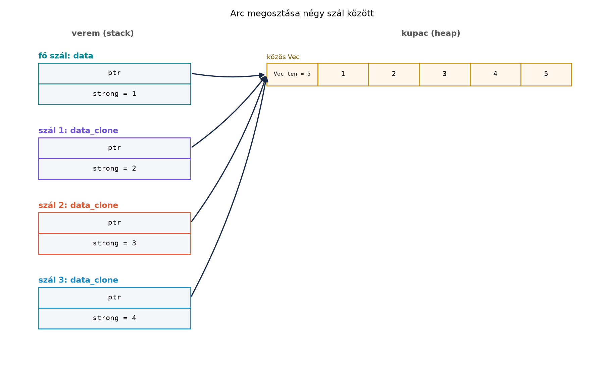

A C++ std::thread használatakor a fordító nem tudja
megmondani, hogy egy megosztott objektumhoz való hozzáférés
biztonságos-e. A data race definiálatlan viselkedés (UB), amelyet a
szabvány csak tilt, de a fordítási folyamat nem ellenőriz. A Rust ezzel
szemben a típusrendszerbe építi a szálbiztonságot: a
Send és Sync marker trait-ek segítségével a
fordító már fordítási időben kizárja a data race-hez vezető leggyakoribb
mintákat. Ez a „félelem nélküli párhuzamosság” (fearless concurrency)
alapja.
Definíció. A std::thread::spawn egy új
operációsrendszer-szálat indít, és JoinHandle<T>-t ad
vissza. A szignatúrája (egyszerűsítve):
pub fn spawn<F, T>(f: F) -> JoinHandle<T>
where
F: FnOnce() -> T,
F: Send + 'static,
T: Send + 'static,A F: FnOnce() -> T azt jelenti, hogy a closure
egyszer lefuttatható, és a benne lévő értékeket elkölti. A
'static korlát azt követeli meg, hogy a closure nem
tartalmazhat nem-'static referenciát; a szál a fő
szál élettartamától függetlenül futhat. Ezért a closure-t általában
move kulcsszóval írjuk, hogy a környezetéből
tulajdonba vegye a szükséges értékeket, ne csak
kölcsönözze őket. A korlát kikényszeríti, hogy a szál a saját adatával
dolgozzon, vagy olyan adattal, amelynek a teljes élettartama garantáltan
elég hosszú.
Definíció. A Send és Sync
úgynevezett auto trait-ek: a fordító automatikusan
implementálja őket egy típusra, ha minden mezőjük is
Send/Sync. A szabályok:
Send: a típus értéke tulajdonjoggal
átadható egy másik szálnak. Más szóval a mozgatás szálhatáron
keresztül biztonságos.Sync: a típusra mutató &T
megosztható több szál között, azaz a referencia
használata párhuzamosan biztonságos.Ezek az auto trait-ek a fordító számára ismert belső szabályokból származnak. Például:
i32, bool,
char, &str, stb.), valamint a
String, Vec<T>,
Box<T> általában Send + Sync, ha a belső
típus is az.Rc<T> nem Send
és nem Sync, mert a referenciaszámláló
növelése nem atomikus; két szál egyszerre módosíthatná a számlálót, ami
data race.Arc<T> (atomic reference counted)
Send + Sync, ha T: Send + Sync, mert a
számláló atomikus. Az Arc a megosztást oldja meg,
a módosítást nem: egy Arc<i32> helyesen megosztható
szálak között, de közvetlenül nem módosítható (az Arc csak
&T-t ad). A módosításhoz belső mutabilitás kell,
szálbiztosan például Arc<Mutex<T>> vagy
atomikus típus.RefCell<T> Send, ha
T: Send, de nem Sync, mert a
futásidejű kölcsönzés-számláló nem szálbiztos.Mutex<T>, RwLock<T>,
AtomicUsize és társai tipikusan Send + Sync,
ha a belső típus megfelelő; ezek a szálbiztos szinkronizációs
primitívek.*const T, *mut T)
nem Send és nem
Sync, mert a memória hozzáférés szinkronizálása a
programozó felelőssége.Szabály. A Rust adatverseny-mentességi garanciája:
ha a kód safe Rustban lefordul, akkor a data race kizárt. A
Send/Sync auto trait-ek a típusrendszeren
keresztül biztosítják, hogy egy érték ne jusson el olyan szálhoz, ahol a
memóriához való hozzáférés nincs szinkronizálva. A szabály megszegése
fordítási hibát okoz, nem UB-t.
Tekintsünk egy tipikus C++ data race példát: két szál egyszerre növel
egy közös int-et, szinkronizáció nélkül.
#include <thread>
#include <iostream>
int main() {
int counter = 0;
std::thread t1([&] { for (int i = 0; i < 1'000'000; ++i) ++counter; });
std::thread t2([&] { for (int i = 0; i < 1'000'000; ++i) ++counter; });
t1.join();
t2.join();
std::cout << counter << '\n'; // UB: data race
}A C++ fordító ezt lefordítja, de a viselkedés definiálatlan – a
kimenet nem garantált. A Rustban a kulcs nem az i32 típusa
(az i32 Send és Sync), hanem a
hozzáférések átfedése. Egyetlen író szál szabályos, mert a
scope garantálja, hogy a szál a scope vége előtt befejeződik, így a
&mut counter kölcsönzés nem él tovább a scope-nál:
Kódblokk — önálló példa · szabályos változat (egyetlen író)
· kimenet: 1000000
use std::thread;
fn main() {
let mut counter = 0;
thread::scope(|s| {
s.spawn(|| {
for _ in 0..1_000_000 {
counter += 1;
}
});
});
println!("{counter}");
}Ha viszont két szál is módosítaná ugyanazt a változót, a két
&mut counter kölcsönzés átfedne, és a fordító
elutasítja (ez a C++ data race-ének fordítási idejű megfelelője):
Kódblokk — önálló példa · szándékosan hibás
· várt hiba: E0499
(cannot borrowcounteras mutable more than once at a time)
use std::thread;
fn main() {
let mut counter = 0;
thread::scope(|s| {
s.spawn(|| {
for _ in 0..1_000_000 {
counter += 1;
}
});
s.spawn(|| {
for _ in 0..1_000_000 {
counter += 1; // E0499: a másik closure már kizárólag kölcsönzi
}
});
});
println!("{counter}");
}A hibaüzenet a kölcsönzési szabályra, nem a
Send/Sync traitekre hivatkozik. A
szinkronizált megosztott módosítás helyes Rust-megoldása
Mutex vagy atomikus típus, amit az Mutex, RwLock, csatornák és a megosztott rkv
alfejezet tárgyal.
A különbség: a C++ UB-t hagy a programban, a Rust pedig a kölcsönzési
szabállyal (és a nem scoped szálaknál a
Send/Sync traitekkel) kikényszeríti a
szinkronizációt a típusrendszeren keresztül.
A következő laborban a szálak indítását, a move
closure-t és az Rc/Arc különbséget
gyakoroljuk.
Munkakönyvtár: ~/rust-labor/r033/
Hozzuk létre a projektet:
cd ~/rust-labor
cargo new r033
cd r033Nyissuk meg a src/main.rs fájlt, és írjuk be az alábbi,
szándékosan hibás kódot:
use std::rc::Rc;
use std::thread;
fn main() {
let data = Rc::new(vec![1, 2, 3, 4, 5]);
let handle = thread::spawn(move || {
println!("Az adat hossza: {}", data.len());
});
handle.join().unwrap();
}Futtassuk a cargo run parancsot. A fordító hibát ad, a
hibakód jellemzően E0277:
Rc<Vec<i32>> cannot be sent between threads
safely. A hiba oka, hogy az Rc nem Send, ezért
a move closure nem teljesíti a thread::spawn
F: Send korlátját. Az Rc referenciaszámlálója
nem atomikus, ezért két szál egyszerre módosíthatná, ami data race-hez
vezetne.
Javítás: cseréljük le az Rc-t
Arc-ra:
use std::sync::Arc;
use std::thread;
fn main() {
let data = Arc::new(vec![1, 2, 3, 4, 5]);
let handle = thread::spawn(move || {
println!("Az adat hossza: {}", data.len());
});
handle.join().unwrap();
}Futtassuk újra a cargo run parancsot. Várt kimenet:
Az adat hossza: 5Ez a példa azt mutatja, hogy az Arc atomikus
referenciaszámlálóval rendelkezik, ezért Send + Sync, míg
az Rc nem az. Az Arc klónozása szálak között
is biztonságos:
use std::sync::Arc;
use std::thread;
fn main() {
let data = Arc::new(vec![1, 2, 3, 4, 5]);
let mut handles = vec![];
for _ in 0..4 {
let data_clone = Arc::clone(&data);
let handle = thread::spawn(move || {
println!("Hossz: {}", data_clone.len());
});
handles.push(handle);
}
for handle in handles {
handle.join().unwrap();
}
}Szál pánikja. A szál pánikjának hatása a panic
stratégiától függ. Az alapértelmezett panic = "unwind"
mellett csak a pánikoló szál áll le, a többi szál és a main
tovább fut, a join() pedig Err-t ad vissza,
amelyből a pánik oka kiolvasható:
use std::thread;
fn main() {
let h = thread::spawn(|| {
let v: Vec<i32> = Vec::new();
v[std::hint::black_box(3)] // index out of bounds -> pánik ebben a szálban
});
let r = h.join();
println!("join().is_err() = {}", r.is_err()); // true; a main szál tovább fut
}panic = "abort" mellett viszont az egész folyamat
azonnal leáll, a többi szállal együtt; ott a join() nem kap
Err-t. A könyv alapértelmezett profilja
unwind.
Figyeljük meg: a move closure-rel minden szál saját
Arc klónt kap, és a számláló atomikusan növekszik.
Ábra: Az Arc megosztása szálak
között.

Az ábra azt mutatja, hogy az Arc másolatai ugyanarra a
kupacobjektumra mutatnak, és a referenciaszámláló atomikusan növekszik.
Az Rc ugyan hasonló elrendezésű, de a számláló növelése nem
atomikus, ezért nem Send.
A thread::spawn 'static korlátja miatt nem
tudunk kölcsönzött referenciákat átadni a szálnak. A
std::thread::scope ezt a korlátot oldja fel: a scope
garantálja, hogy a benne indított szálak befejeződnek,
mielőtt a scope-ból kilépünk. Így a szálak kölcsönözhetnek olyan
adatokat, amelyek a scope-on kívül élnek, de nem
'static.
Kódblokk — önálló példa · szándékosan hibás
· várt hiba: E0502
(cannot borrowdataas mutable because it is also borrowed as immutable)
use std::thread;
fn main() {
let mut data = vec![1, 2, 3, 4, 5];
thread::scope(|s| {
s.spawn(|| {
println!("Első szál: {:?}", data); // megosztott kölcsönzés
});
s.spawn(|| {
data.push(6); // E0502: módosító kölcsönzés, miközben az előző él
});
});
println!("A scope után: {:?}", data);
}Ez a program nem fordul le, ezért nincs futási
kimenete: az első closure &data-t, a második
&mut data-t rögzít, és a két kölcsönzés a scope-on
belül egyszerre él. A scope a 'static korlátot
váltja ki a scope élettartamával, de a kölcsönzési szabály továbbra is
érvényes. Négy szabályos megoldás van, attól függően, mit akarunk.
Csak olvasó szálak. Tetszőleges számú megosztott
kölcsönzés megengedett; a szálak értéket is visszaadhatnak a
join-on keresztül:
use std::thread;
fn main() {
let data = vec![1, 2, 3, 4, 5];
let (sum, max) = thread::scope(|s| {
let sum = s.spawn(|| data.iter().sum::<i32>());
let max = s.spawn(|| *data.iter().max().unwrap());
(sum.join().unwrap(), max.join().unwrap())
});
println!("összeg = {sum}, maximum = {max}");
}Várt kimenet:
összeg = 15, maximum = 5Diszjunkt szeletek. A split_at_mut két
nem átfedő &mut szeletet ad (lásd Biztonságos absztrakció unsafe alapon), így két
szál egyszerre módosíthat egy vektort:
use std::thread;
fn main() {
let mut data = vec![1, 2, 3, 4, 5, 6];
let (left, right) = data.split_at_mut(3);
thread::scope(|s| {
s.spawn(|| left.iter_mut().for_each(|x| *x *= 10));
s.spawn(|| right.iter_mut().for_each(|x| *x += 100));
});
println!("{data:?}");
}Várt kimenet (a két szál nem fed át, ezért determinisztikus):
[10, 20, 30, 104, 105, 106]Külön scope-ok. Az olvasó és az író scope-ja egymás után fut, így a kölcsönzések nem fednek át (ez gyakorlatilag szekvenciális, de szabályos).
Zár. Ha a szálaknak ténylegesen osztozniuk kell egy
módosítható adaton, Mutex kell; a push-ok sorrendje ekkor
nem meghatározott, ezért a kimenetet rendezve érdemes ellenőrizni:
use std::sync::Mutex;
use std::thread;
fn main() {
let data = Mutex::new(vec![1, 2, 3, 4, 5]);
thread::scope(|s| {
s.spawn(|| data.lock().unwrap().push(6));
s.spawn(|| data.lock().unwrap().push(7));
});
let mut v = data.into_inner().unwrap();
v.sort(); // a két push sorrendje nem meghatározott
println!("{v:?}");
}Várt kimenet:
[1, 2, 3, 4, 5, 6, 7]Rc használata szálak között. A
leggyakoribb hiba, amikor a C++-os shared_ptr mintájára
Rc-t próbálunk megosztani. A Rc nem
Send és nem Sync; a megoldás Arc.
A hibaüzenet (E0277) világos: a típus nem teljesíti a
Send korlátot. Továbbvitt eredmény. Ez a
különbségtétel az Mutex, RwLock, csatornák és a
megosztott rkv alfejezetben az
Arc<Mutex<Store>> mintához vezet; a Send-határok az aszinkron kódban, a C ABI pedig az FFI-ban használja a
Send/Sync fogalmát.
move closure elfelejtése. Ha a
closure nem move, a környezetéből kölcsönzött értékek nem
'static, ezért a thread::spawn hibát ad. A
hibakód E0373 vagy E0521 jellemzően. A
megoldás a move használata, vagy ha a kölcsönzés szükséges,
a thread::scope alkalmazása.
RefCell<T> megosztása. A
RefCell futásidejű kölcsönzést biztosít, de nem szálbiztos.
Ha több szálból akarunk hozzáférni, a Mutex vagy
RwLock a megfelelő választás. Ez a hiba gyakran akkor
jelentkezik, amikor az Rc<RefCell<T>> mintát
próbáljuk több szálra kiterjeszteni; a helyettesítés
Arc<Mutex<T>>.
'static korlát figyelmen kívül
hagyása. A thread::spawn által megkövetelt
'static azt jelenti, hogy a closure-nek nem lehet
nem-'static referenciája. Ha a fő szál adatait szeretnénk
látni, a move closure-rel tulajdonba kell venni az értéket,
vagy Arc-ot használni.
A következő kód lefordul-e? Ha nem, miért és mi a javítás?
use std::rc::Rc;
use std::thread;
fn main() {
let s = Rc::new(String::from("hello"));
let handle = thread::spawn(move || {
println!("{}", s);
});
handle.join().unwrap();
}Írja át az alábbi C++ kódot idiomatikus Rustra úgy, hogy a szálak
közötti adatmegosztás Arc-cal történjen, és a kimenet
tartalma ugyanaz legyen:
#include <iostream>
#include <thread>
#include <vector>
int main() {
std::vector<int> v = {1, 2, 3, 4, 5};
std::thread t([&v] {
for (int x : v) std::cout << x << ' ';
});
t.join();
}Az rkv-core meglévő tárolóit (MemStore,
FileStore) tedd szálak között megosztható típussá. Az
rkv-core/src/shared.rs fájlban definiálj egy
SharedStore típust, amely bármely
Storage + Send implementációt burkol egy
Arc<Mutex<Box<dyn Storage + Send>>>
mezőben. Legyen Clone, legyen
new(store: impl Storage + Send + 'static) konstruktora,
set(&self, ..) és get(&self, ..)
metódusa, valamint egy
report(&self) -> Result<String> metódusa,
amely a tárolt kulcsok számát és listáját adja. Írj tesztet, amely
fordítási időben ellenőrzi a Send + Sync tulajdonságot, két
szálból ír, a fő szálból olvas. Magyarázd el, miért elég a
Mutex<Box<dyn Storage + Send>> (miért nem kell
a trait-objektumnak Sync-nek lennie), és miért nem működne
közvetlenül egy Arc<MemStore>.
Az alábbi kód szándékosan hibás. Javítsa ki úgy, hogy a
thread::scope-ot használja a kölcsönzött adat megosztására,
és a kód leforduljon:
use std::thread;
fn main() {
let data = vec![10, 20, 30];
let handle = thread::spawn(|| {
println!("{:?}", data);
});
handle.join().unwrap();
}A kód nem fordul le, mert Rc nem Send. A
hibaüzenet jellemzően E0277. Javítás: cserélje
Rc-t Arc-ra:
use std::sync::Arc;
use std::thread;
fn main() {
let s = Arc::new(String::from("hello"));
let handle = thread::spawn(move || {
println!("{}", s);
});
handle.join().unwrap();
}Idiomatikus Rust-átírás:
use std::sync::Arc;
use std::thread;
fn main() {
let v = Arc::new(vec![1, 2, 3, 4, 5]);
let v_clone = Arc::clone(&v);
let handle = thread::spawn(move || {
for x in v_clone.iter() {
print!("{} ", x);
}
});
handle.join().unwrap();
}A kimenet: 1 2 3 4 5.
Kódblokk — fájl: rkv-core/src/shared.rs ·
művelet: új fájl · ellenőrzés: cargo build -p rkv-core
use std::sync::{Arc, Mutex};
use crate::{Result, Storage};
/// Szálak között megosztható tároló: bármely `Storage` implementációt burkol.
#[derive(Clone)]
pub struct SharedStore {
inner: Arc<Mutex<Box<dyn Storage + Send>>>,
}
impl SharedStore {
pub fn new(store: impl Storage + Send + 'static) -> Self {
Self {
inner: Arc::new(Mutex::new(Box::new(store))),
}
}
pub fn set(&self, key: String, value: Vec<u8>) -> Result<()> {
self.inner.lock().unwrap().set(key, value)
}
pub fn get(&self, key: &str) -> Result<Option<Vec<u8>>> {
self.inner.lock().unwrap().get(key)
}
/// A tárolt kulcsok száma és listája (egyetlen zárfoglalással).
pub fn report(&self) -> Result<String> {
let guard = self.inner.lock().unwrap();
let keys: Vec<String> = guard.list(None)?.into_iter().map(|(k, _)| k).collect();
Ok(format!("A tárolóban {} kulcs van: {:?}", keys.len(), keys))
}
}Kódblokk — fájl: rkv-core/src/lib.rs · művelet:
beillesztés a pub mod sorok közé és a pub use
sorok után · ellenőrzés: cargo build --workspace
pub mod shared;
pub use shared::SharedStore;Kódblokk — fájl: rkv-core/tests/shared.rs ·
művelet: új fájl · ellenőrzés:
cargo test -p rkv-core --test shared
use std::thread;
use rkv_core::{MemStore, SharedStore};
fn assert_send_sync<T: Send + Sync>() {}
#[test]
fn shared_store_works_across_threads() {
assert_send_sync::<SharedStore>(); // fordítási idejű ellenőrzés
let store = SharedStore::new(MemStore::new());
let handles: Vec<_> = (0..2u8)
.map(|i| {
let store = store.clone();
thread::spawn(move || store.set(format!("k{i}"), vec![i]).unwrap())
})
.collect();
for h in handles {
h.join().unwrap();
}
assert_eq!(store.get("k1").unwrap(), Some(vec![1]));
assert_eq!(store.report().unwrap(), r#"A tárolóban 2 kulcs van: ["k0", "k1"]"#);
}Az Arc a megosztást adja (a SharedStore
klónjai ugyanazt a tárolót látják), a Mutex pedig a belső
mutabilitást: a set &self-et vesz, mégis
&mut dyn Storage-ot ér el a zár alatt. A
Mutex<T> akkor Send + Sync, ha
T: Send; ezért elég, hogy a trait-objektum
Send (Box<dyn Storage + Send>),
Sync nem kell. Egy Arc<MemStore> ezzel
szemben nem módosítható (az Arc csak
&MemStore-t ad, a set pedig
&mut self-et kér). A report egyetlen
zárfoglalással dolgozik, és a tároló bármely háttérrel
(MemStore, FileStore) működik. A Mutex, RwLock, csatornák és a megosztott rkv ezt a
típust bővíti tovább.
A hibát a thread::spawn 'static korlátja
okozza. Javítás thread::scope-pal:
use std::thread;
fn main() {
let data = vec![10, 20, 30];
thread::scope(|s| {
s.spawn(|| {
println!("{:?}", data);
});
});
}A thread::scope garantálja, hogy a szál befejeződik,
mielőtt a data kimegy a hatókörből.
A Rust std::thread::spawn egy 'static
korlátos, Send closure-t vár el, és
JoinHandle<T>-t ad vissza, amelynek join
metódusa várja a szál végét. A Send és Sync
auto trait-ek fordítási időben garantálják, hogy egy típus értéke
átadható (Send) vagy referenciája megosztható
(Sync) szálak között. Az Rc<T> nem
Send, mert nem atomikus referenciaszámlálót használ; az
Arc<T> viszont Send + Sync, ha
T is az. A thread::scope lehetővé teszi
nem-'static referenciák kölcsönzését szálakba, mert a scope
garantálja a szálak befejeződését. A C++-ban a data race UB, a Rustban a
Send/Sync rendszer kizárja a versenyhelyzetet
a safe kódban. Továbbvitt eredmény. A
Send/Sync fogalma alapozza meg a Mutex, RwLock, csatornák és a megosztott rkv
alfejezet Arc<Mutex<Store>> mintáját, a Future-ök és async/await
Send-határait, és a C ABI
FFI-biztonsági megfontolásait.
A nyelv szabályait a std::thread modul dokumentációja és
a Rust Reference írja le. A hibaüzenetek (E0277,
E0373, E0502) szövege verziófüggő, ezért a
fejezet a hibakódot és a hiba lényegét közli. A
thread::scope a Rust 1.63 óta stabil; a
Send/Sync auto trait-ek viselkedése a nyelv
alapvető része. A SharedStore típust a Mutex, RwLock, csatornák és a megosztott rkv
alfejezet használja. Ebben az alfejezetben külső crate-et nem
használunk.